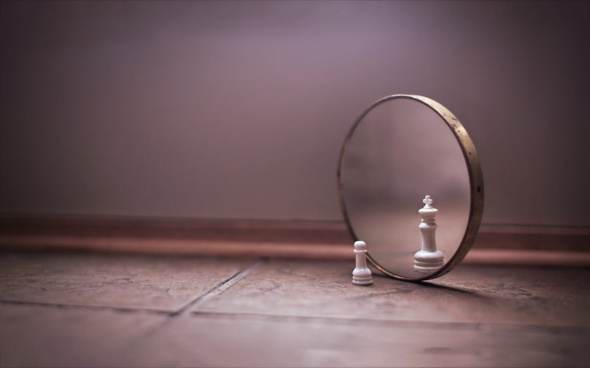

I am an avid practicioner of Brazilian Jiu-Jitsu. I've been training for three years now. I currently represent Gracie Elite Team via Ralph Gracie Jiu Jitsu. I've competed throughout my whole career, I've medalled in the Pan-American Championships, San Francisco Open Championships and New York Open Championship just to name a few. This is my favorite hobby and it's a fun way to stay healthy and interact with like minded people.
I love travelling, especially alone, because you find out so much about yourself. You have to push yourself to the limit in order to explore new cultures, new food, and new perspectives in life. I never thought travelling would be one of my priorities in life, but every day I dream about my next big trip!
Cities I've been to are: (click to show)
I always look to be more efficient in my life. I love to learn new techniques about all aspects of life. My role model in personal development is Tim Ferris since he is an expert in life hacking. I believe life hacking is the best way to learn anything you want and learn it efficiently.
